Módulu 1 (Semana 1 – 4): Fundasaun Fiar no Salvasaun
Livru lisaun Súnday School hodi hanorin labarik sira iha Timór-Leste atu hatene katak Maromak kria sira ho folin boot, simu Jesus nu'udar Salvadór, no moris ho brani nu'udar Maromak nia oan.
| Semana 1 Lisaun 1 |
Maromak Kria Ha'u 📖 Jenesis 1:27-28 Lino iha foho matak Ermera aprende katak Maromak kria nia hodi tuir Maromak nia oin ho folin boot. |
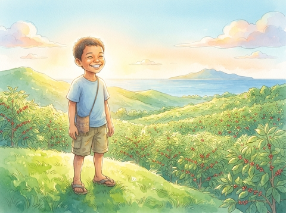 |
| Semana 2 Lisaun 2 |
Ita Hetan Maromak Nia Salvasaun 📖 Jenesis 3:15 · Isaías 55:7 Bella iha Dili aprende katak bainhira ita fila fali ho lialos, Maromak loke dalan salvasaun no perdua. |
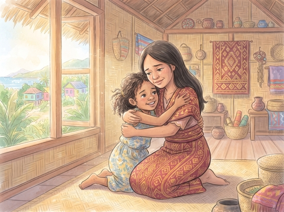 |
| Semana 3 Lisaun 3 |
Jesus Katak Ha'u-nia Salvadór 📖 Roma 10:9-10 Antonio iha Baucau konfesa fiar ho ksolok katak Jesus mate iha krus no moris hi'as hodi salva nia. |
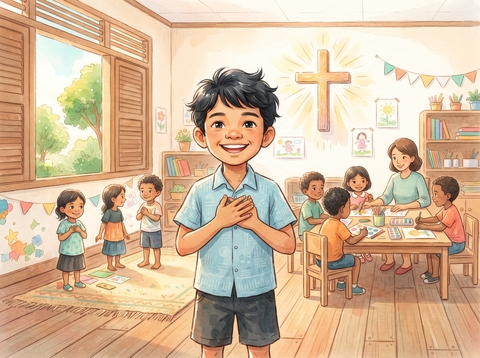 |
| Semana 4 Lisaun 4 |
Ha'u Katak Maromak Nia Oan Ne'ebé Santu 📖 Joaõ 1:12 Rosa hamriik ho oin-midar no brani tanba ema hotu ne'ebé simu Jesus hetan kbiit atu sai Maromak nia oan. |
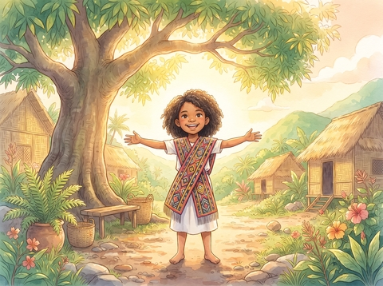 |
|
Lino iha foho matak Ermera haree ba tasi no illa Ataúro |
🎯 Tópiku Prinsipál Ohin
Maromak kria ha'u hodi tuir Nia oin brani no kmanek, no ha'u folin boot tebes iha Nia oin.
📖 Versíkulu Bíblia Ohin — Jenesis 1:27-28
"Maromak kria ema hodi tuir Nia oin: Nia kria ema hodi tuir Maromak nia oin; Nia kria sira mane no feto. Maromak haraik ben ba sira, no Maromak dehan ba sira: 'Bikan no foti barak, halo nakonu rai no domina rai ne'e; ukun ika iha tasi, manu iha lalehan, no kualkér animál ne'ebé book an iha rai.'" |
Maromak kria lalehan, rai, tasi furak, no ai-horis hotu-hotu. Depoiz ne'e, Maromak kria ema nu'udar kriasaun kmanek liu iha mundu. La hanesan ho balada ka ai-horis sira, Maromak kria ema hodi tuir 'Maromak nia oin'. Ne'e katak ita iha Maromak nia domin no karákter kmanek, no ita ida-idak folin boot tebes iha Maromak nia oin.
Iha foho matak Ermera, labarik-mane ida ho tinan ualu naran Lino gosta tebes haree kafé-fuan sira ne'ebé mean no saborozu iha dader-saan. Loron ida, Lino sa'e ba foho aas, haree lalehan azúl no tasi ne'ebé dook haree husi illa Ataúro, no nia hanoin: 'Maromak ne'ebé kria mundu boot no furak ne'e kmanek tebes! Maibé ha'u ne'e ki'ik, no dalaruma halo sala barak, Maromak sei domina no ama ha'u ka?'
Iha tempu ne'e, mestre Súnday School kaer Lino nia liman ho domin no dehan: 'Lino, foho Ramelau ne'ebé aas ne'e furak, maibé kriasaun kmanek ne'ebé Maromak kria ho laran kompletu mak ó rasik! Maromak kria Lino hodi tuir Nia oin, no fo misaun kmanek atu kuida natureza no belun sira ho domin.' Lino nia laran haksolok tebes. Nia hatene katak nia ne'e ema kmanek no folin boot ne'ebé Maromak ama tebes!
Misaun Prátika Semana Ne'e: Ha'u mós Maromak nia oan ne'ebé folin boot! Semana ne'e, bainhira ó haree espellu, dehan ba Maromak: "Maromak, obrigadu barak tanba Kria ha'u ho folin boot!" no halo hahalok ida hodi kuida ó-nia isin no klamar (ezemplu: fase liman molok han, toba sedu, no ko'alia liafuan di'ak).
|
Bella simu hakuak domin husi nia inan iha uma Dili |
🎯 Tópiku Prinsipál Ohin
Maske sala haketak ita husi Maromak, Maromak lolo Nia liman ho domin hodi tatoli dalan salvasaun mai ita.
📖 Versíkulu Bíblia Ohin — Jenesis 3:15 · Isaías 55:7
"Ha'u sei hatuur inimizade iha ó no feto ne'e nia leet, no iha ó-nia bei-oan no feto nia bei-oan nia leet; feto nia bei-oan sei sama ó-nia ulun, no ó sei haas nia ain-tuur. (Jenesis 3:15) / Ema aat tenke husik nia dalan, no ema nakdedar husik nia hanoin; mai fila ba Na'i, nune'e Nia sei haraik mizerikórdia ba nia, no ba ita-nia Maromak, tanba Nia sei fo perdua ho laran-luak. (Isaías 55:7)" |
Iha mundu furak ne'ebé Maromak kria, ema nia la-sofrer no la-rona hamosu 'sala'. Sala ne'e haketak ema husi Maromak, no lori kanek ho mizéria ba ema nia laran. Maibé Maromak domin la husik ita iha sala laran. Husi hahú, Maromak fo promesa atu haruka Salvadór ida atu nakloke fali dalan salvasaun mai ita.
Iha suku tasi-ibun Dili, labarik-feto ida naran Bella halimar ho nia alin no la kuidadu to'o boneka nuu-tahan nian harat. Bella ta'uk tebes, nune'e nia subar boneka nakharat iha kantu kintál no bosok ba nia alin: 'Ha'u la hatene.' Iha kalan ne'e, Bella nia laran todan no la di'ak atu toba. Sala bosok ne'e haketak Bella husi Maromak no haketak nia husi nia família.
Iha aban dader, Bella brani atu hato'o lialos ba nia inan no husu perdua. Bella nia inan hakuak nia ho domin no dehan: 'Bella, bainhira halo sala, keta subar, maibé fila fali ho lialos ne'e mak foti folin boot. Maromak mós nunka husik ita bainhira ita halo sala, Nia loke dalan atu hakuak no perdua ita.' Bella simu no komprende Maromak Nia salvasaun no perdua ne'ebé luan tebes!
Misaun Prátika Semana Ne'e: Maromak ne'ebé salva ita pronto atu fo perdua bainhira ita arrepende an ho lialos. Semana ne'e, se ó iha sala ruma, harohan franku ba Maromak, no se ó halo sala ba belun ka família, bá ko'alia uluk: "Deskulpa, ha'u sala" ka "Ha'u fo perdua ba ó."
|
Antonio iha Baucau konfesa fiar ho ksolok ba Jesus Salvadór |
🎯 Tópiku Prinsipál Ohin
Ita fiar no foti lian katak Jesus mate iha krus no moris hi'as hodi sosa ita husi sala.
📖 Versíkulu Bíblia Ohin — Roma 10:9-10
"Tanba se ó foti lian ho ó-nia ibun katak Jesus ne'e Na'i, no fiar iha ó-nia laran katak Maromak harii Nia husi mate, ó sei hetan salvasaun. Tanba ho laran ema fiar hodi hetan justisa, no ho ibun ema foti lian hodi hetan salvasaun." |
Salvadór ne'ebé Maromak promete mak Jesus Kristu! Jesus foti ita-nia kastigu sala nian hodi mate iha krus ba ita. Depoiz loron tolu, Nia moris hi'as husi mate no manán kbiit mate nian. Ema hotu ne'ebé fiar iha laran no foti lian ho ibun sei hetan salvasaun no moris rohan-laek.
Iha Baucau, besik bee-matan nakloke furak ida, labarik-mane ida naran Antonio la hatene nani maibé monu ba bee kbiit laran. 'Ajuda ha'u! Salva ha'u!' Antonio husu tulun ho lian manas. Iha tempu ne'e, maun ida iha ninin haksoit sai ba bee laran, hakuak Antonio metin no foti nia sai ba rai-maran.
Antonio dada iis ho ksolok no hakru'uk ba maun ne'e: 'Maun, obrigadu barak! Se maun la mai, ha'u mate tiha karik. Maun mak ha'u-nia salvadór!' Iha Domingu iha Igreja, Antonio rona mestre nia hanorin no simu kbiit iha laran: 'Bainhira ha'u monu iha tasi sala nian, Jesus lolo Nia liman krus nian hodi foti ha'u sai!' Antonio foti lian ho ksolok: 'Jesus mak ha'u-nia Salvadór!'
Misaun Prátika Semana Ne'e: Foti lian brani katak Jesus mak ha'u-nia Salvadór! Semana ne'e, iha ó-nia orasaun loron-loron no iha amigu/família nia oin, dehan ho lian klaru no moos ba dala 3: "Jesus mak ha'u-nia Salvadór ne'ebé salva ha'u!"
|
Rosa hatais Tais hamriik ho oin-midar nu'udar Maromak nia oan |
🎯 Tópiku Prinsipál Ohin
Sira ne'ebé simu Jesus hetan kbiit no direitu kmanek nu'udar Maromak nia oan.
📖 Versíkulu Bíblia Ohin — Joaõ 1:12
"Maibé ba sira hotu ne'ebé simu Nia, no fiar ba Nia naran, Nia fo kbiit ba sira atu sai Maromak nia oan." |
Ba ema ne'ebé simu Jesus ba sira-nia laran, Maromak fo prezente ne'ebé boot liu: kbiit no direitu atu sai 'Maromak Nia Oan'. Ita la'ós mesak ka ki'ak tan. Maromak sai ita-nia Aman, ne'ebé sempre kuida, proteje, no fo buat hotu ne'ebé ita presiza.
Iha kintál rai-rahun suku nian, Rosa halimar futeból no nia sapatu kotu, nune'e nia tuur iha rai no tanis. Belun balu goza nia: 'Rosa la iha sapatu.' Iha tempu ne'e, Rosa nia avó-mane ne'ebé fila husi Igreja hakuak Rosa ho manas no dehan: 'Rosa, keta triste tan sapatu ka buat li'ur. Ó ne'e Liurai Boot liu Maromak nia oan-feto kmanek!'
Rona tiha avó nia liafuan, Rosa sente kbiit no ksolok foun iha nia laran: 'Lialos tebes! Ha'u-nia kotuk iha Maromak Aman ne'ebé kbiit boot liu no ama ha'u!' Rosa hamriik hodi oin-midar. Nu'udar Maromak nia oan, Rosa la triste tan ba goza, maibé brani hatudu hahalok di'ak no santu nu'udar Maromak nia oan kmanek.
Misaun Prátika Semana Ne'e: Maromak nia oan iha brani no santidade! Semana ne'e, bainhira ó enfrenta susar ka triste iha eskola, dehan ba ó-nia laran: "Ha'u ne'e Maromak nia oan kmanek!" no hatudu hahalok di'ak 1 (ezemplu: ajuda belun ida, hatudu oin-midar no ko'alia morin).
Módulu 2 (Semana 5 – 8): Adorasaun, Orasaun no Liafuan Moris
Livru lisaun Súnday School hodi hanorin labarik sira iha Timór-Leste atu adora Maromak ho laran kompletu, ko'alia ho Maromak liuhusi orasaun, la'o iha Maromak nia Liafuan nia naroman, no hadomi Maromak liu buat hotu.
| Semana 5 Lisaun 5 |
Hadora Maromak ho Laran Kompletu 📖 Joaõ 4:24 Manuel iha Lospalos aprende adora Maromak iha espíritu no lialos laran bainhira halimar babadok no kantik. |
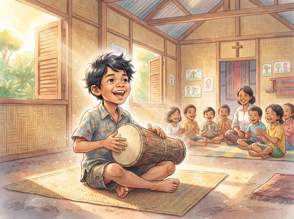 |
| Semana 6 Lisaun 6 |
Harohan: Ko'alia ho Maromak 📖 Mateus 6:9-13 Fatima iha Liquiçá harohan ho laran moos ba nia avó-feto ne'ebé moras no simu paz husi Aman Maromak. |
|
| Semana 7 Lisaun 7 |
Maromak nia Liafuan Nu'udar Na'i nia Naroman 📖 Salmu 119:105 · 2 Timóteo 3:16-17 Tomas iha Manatuto hatene katak Bíblia mak ahi-oan no naroman lialos ne'ebé gia ita-nia ain loron-loron. |
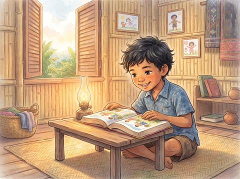 |
| Semana 8 Lisaun 8 |
Hadomi Maromak ho Laran, Klamar, no Kbiit Hotu 📖 Deuteronómio 6:4-5 Maria iha Ainaro hili hadomi Maromak uluk liu fali halimar no konvida nia belun sira bá Súnday School hamutuk. |
|
Manuel iha Lospalos kantik no halimar babadok adora Maromak |
🎯 Tópiku Prinsipál Ohin
Hadora ne'e tempu santu hodi fo agradesimentu no ksolok laran kompletu ba Maromak.
📖 Versíkulu Bíblia Ohin — Joaõ 4:24
"Maromak ne'e Espíritu; no sira ne'ebé adora Nia tenke adora iha espíritu no lialos laran." |
Maromak kria ita atu adora no fo glória ba Nia! Hadora ne'e la'ós de'it kantik múzika ho ibun sin hanoin, maibé ne'e mak fo ita-nia laran kompletu, agradesimentu, no respeitu ba Maromak ne'ebé kria no ama ita. Bainhira ita adora Maromak iha espíritu no lialos laran, Maromak haksolok no fo kbiit santu ba ita-nia klamar.
Iha suku kmanek Lospalos (Lautém), labarik-mane ida ho tinan sia naran Manuel gosta tebes halimar babadok (tambur tradisionál Timór nian) no kantik iha Súnday School. Loron ida, bainhira kantik iha oin, Manuel haree de'it ba nia belun sira atu hatudu katak nia halimar babadok ho kapás. Iha tempu ne'e, mestre Súnday School ko'alia ho domin no fo hanoin ba nia: "Manuel, ita kantik no halimar babadok la'ós atu hatudu an ba ema, maibé atu foti lian adora Maromak ne'ebé tuur iha tronu lalehan."
Manuel simu liafuan ne'e no troka nia laran. Iha semana ne'e nia laran, bainhira kantik fali, Manuel taka matan, foti lian ho laran ksolok, no dehan ba Maromak: "Maromak, ha'u adora Ita ho ha'u-nia laran kompletu!" Manuel sente ksolok no paz kmanek foun ida ne'ebé halo nia laran nakenu ho Espíritu Santu.
Misaun Prátika Semana Ne'e: Hadora Maromak ho laran kompletu! Semana ne'e, bainhira kantik ka harohan iha Igreja no iha uma, fekit matan ka haree ba lalehan, no fo agradesimentu lialos ba Maromak tanba Nia di'ak no ama ó.
|
Fatima tuur iha ai-mangga okos iha Liquiçá harohan ho laran moos |
🎯 Tópiku Prinsipál Ohin
Harohan mak ko'alia laran moos no belun metin ho Maromak nu'udar ita-nia Aman kmanek.
📖 Versíkulu Bíblia Ohin — Mateus 6:9-13
"Nune'e imi tenke harohan nune'e: 'Ami-nia Aman iha lalehan, halo Ita-nia Naran santu; Ita-nia Reinu mai; Ita-nia hakarak halo iha rai hanesan iha lalehan...'" |
Harohan la'ós ko'alia liafuan susar ka naruk ne'ebé foti husi livru boot sira. Harohan mak ko'alia laran moos no neineik ho Maromak ne'ebé rona ita hanesan Aman ne'ebé ama nia oan. Ita bele harohan iha kualkér tempu: bainhira ita haksolok, bainhira ita triste, no bainhira ita presiza ajuda.
Iha Liquiçá besik tasi fatuk sira, labarik-feto ida ho tinan sanulu naran Fatima sente triste no ta'uk tanba nia avó-feto moras boot. Fatima la hatene liafuan igreja nian ne'ebé kmanek atu harohan. Mestre Súnday School hanorin nia ko'alia kona-ba Na'i nia Orasaun (Ami-nia Aman) no dehan: "Fatima, harohan ne'e hanesan ko'alia ho ó-nia Aman ne'ebé ama ó tebes. Ó bele ko'alia buat hotu ne'ebé iha ó-nia laran."
Fatima bá tuur iha ai-mangga nia okos iha ninin tasi, kaer liman hamutuk no dehan ho laran moos: "Aman Maromak, ha'u ama ha'u-nia avó. Favór fo kbiit no kura nia moras. Ha'u fiar ba Ita-nia domin." Iha tempu ne'e rasik, Fatima sente paz no ksolok luan tama ba nia laran tanba nia hatene katak Maromak rona tiha nia orasaun.
Misaun Prátika Semana Ne'e: Harohan loron-loron nu'udar ko'alia ho belun! Semana ne'e, molok toba no dader-saan, husik minutu 3 atu ko'alia ho Maromak franku kona-ba ó-nia ksolok, ta'uk, no harohan mós ba família no belun sira.
|
Tomas iha Manatuto lee Bíblia iha naroman ahi-oan nia okos |
🎯 Tópiku Prinsipál Ohin
Maromak nia Liafuan (Bíblia) mak naroman lialos ne'ebé gia ita-nia ain no fo ai-han ba klamar loron-loron.
📖 Versíkulu Bíblia Ohin — Salmu 119:105 · 2 Timóteo 3:16-17
"Ita-nia Liafuan ne'e nu'udar ahi-oan ba ha'u-nia ain, no naroman ba ha'u-nia dalan. (Salmu 119:105) / Eskritura hotu-hotu mai husi Maromak nia iis, no di'ak atu hanorin, atu korrije, atu kore sala, no atu fo forma iha justisa laran. (2 Timóteo 3:16-17)" |
Bíblia la'ós livru tuan baibain ida, maibé ne'e mak Maromak nia lian moris ne'ebé ko'alia mai ita. Iha mundu ne'ebé nakukun no nakenu ho tentasaun aat barak, Maromak nia Liafuan funsiona hanesan sulu ka ahi-oan ne'ebé fo naroman ba ita-nia ain, nune'e ita la monu no la la'o sala dalan.
Iha Manatuto, labarik-mane ida ho tinan ualu naran Tomas la'o fila ba uma iha lokraik bainhira loron-matan tun tiha. Dalan nakukun no nia la haree fatuk no ai-tahan sira, nune'e nia ta'uk atu monu. Iha tempu ne'e, nia maun lori sulu (flashlight) naroman boot ida hodi fo naroman ba dalan. Tomas sente seguru no la'o ho ksolok.
Mestre Súnday School fo hatene Tomas katak: "Tomas, bainhira ó badinas no lee Bíblia loron-loron, Maromak nia Liafuan fo naroman ba ó-nia hanoin, atu ó hatene hili dalan lialos no la monu ba halo sala." Tomas foti desizaun atu lee versíkulu ki'ik sira loron-loron nu'udar naroman ba nia moris.
Misaun Prátika Semana Ne'e: Maromak nia Liafuan mak naroman ba ha'u! Semana ne'e, lee no dekora versíkulu 1 (Salmu 119:105) hamutuk ho ó-nia família, no hakerek versíkulu ne'e iha kadernu atu hanoin loron-loron.
|
Maria iha Ainaro konvida nia belun sira bá Súnday School hamutuk |
🎯 Tópiku Prinsipál Ohin
Ita hili atu hadomi Maromak uluk liu no boot liu buat hotu-hotu ho laran, klamar, no kbiit tomak.
📖 Versíkulu Bíblia Ohin — Deuteronómio 6:4-5
"Rona, ó Israel: Na'i ita-nia Maromak ne'e Na'i mesak ida. Ó tenke hadomi Na'i ó-nia Maromak ho ó-nia laran tomak, ho ó-nia klamar tomak, no ho ó-nia kbiit tomak." |
Hadomi Maromak la'ós de'it ko'alia iha ibun, maibé tau Maromak uluk liu fali buat hotu-hotu iha ita-nia moris. Ne'e katak tau Maromak uluk liu fali halimar, telemóvel, ka hanoin an rasik. Bainhira ita hadomi Maromak ho laran, klamar, no kbiit tomak, ita-nia moris sai nakenu ho domin no foti glória ba Maromak.
Iha Ainaro iha foho Ramelau okos, labarik-feto ida ho tinan sia naran Maria gosta tebes halimar finta no kosta ho nia belun sira. Iha dader Domingu ida, nia belun sira mai bolu nia: "Maria, mai ita halimar iha kintál sin bá Súnday School!" Maria hanoin uitoan maibé hanoin fali versíkulu Deuteronómio 6:5 ne'ebé mestre hanorin.
Maria oin-midar no ko'alia kmanek ba nia belun sira: "Ha'u hadomi Maromak uluk liu, mai ita bá Súnday School hamutuk uluk, depoiz ida-ne'e ita halimar ho ksolok boot liu!" Nia belun sira rona no bá Súnday School hamutuk ho Maria. Maria hatudu katak hadomi Maromak ho laran kompletu lori bensaun boot ba nia no ba nia amigu sira!
Misaun Prátika Semana Ne'e: Hadomi Maromak uluk liu buat hotu! Semana ne'e, foti desizaun ida hodi tau Maromak uluk (ezemplu: harohan no lee Bíblia molok halimar telemóvel/halimar iha li'ur, ka mai Súnday School la atrasu).
Módulu 3 (Semana 9 – 12): Ksolok, Paz, Obediénsia no Agradesimentu
Livru lisaun Súnday School hodi hanorin labarik sira iha Timór-Leste atu moris ho ksolok husi Espíritu Santu, simu paz ne'ebé manán tauk, halo tuir Maromak nia Liafuan ho ksolok, no hato'o agradesimentu ba Maromak nia grasa hotu.
| Semana 9 Lisaun 9 |
Ksolok Nakenu iha Ha'u-nia Laran 📖 Galásia 5:22 · Filipos 4:4 Gabriel iha Bobonaro aprende katak ksolok lialos husi Jesus hela metin iha laran maske udan boot iha li'ur. |
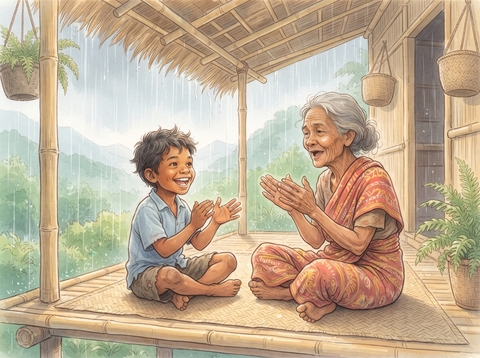 |
| Semana 10 Lisaun 10 |
Paz husi Maromak ne'ebé Manán Tauk 📖 Joaõ 14:27 Isabela iha Suai harohan no simu paz celestial husi Jesus hodi toba hakmatek iha kalan anin boot. |
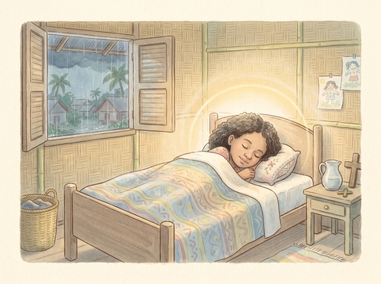 |
| Semana 11 Lisaun 11 |
Halo Tuir Maromak nia Liafuan ho Ksolok 📖 1 Samuel 15:22 Daniel iha Oecusse rega kintál ho oin-midar hodi hatudu katak rona no halo tuir di'ak liu sakrifísiu. |
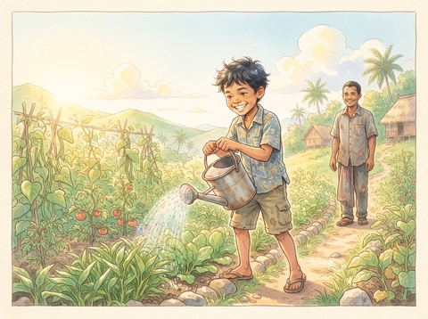 |
| Semana 12 Lisaun 12 |
Hato'o Agradesimentu ba Grasias Hotu 📖 Lucas 17:15-16 Beatriz iha Viqueque hakuak kadernu foun ho laran nakenu ho agradesimentu ba Maromak no nia mestre. |
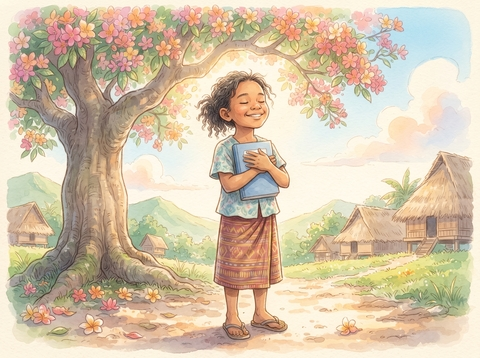 |
|
Gabriel no nia avó-feto kantik ho ksolok iha varanda Bobonaro |
🎯 Tópiku Prinsipál Ohin
Ksolok husi Maromak la'ós depende ba meiu ka sasán sira, maibé ne'e kbiit santu ne'ebé hela iha ita-nia laran loron-loron.
📖 Versíkulu Bíblia Ohin — Galásia 5:22 · Filipos 4:4
"Maibé Espíritu nia fuan mak: domin, ksolok, paz, laran-luak, laran-di'ak, kbiit-an, fiar... (Galásia 5:22) / Haksolok nafatin iha Na'i; ha'u dehan fali: haksolok ba! (Filipos 4:4)" |
Espíritu Santu nia fuan ida mak 'ksolok' (joy). Ksolok la'ós de'it tanba ita simu presente foun ka han hahán midar. Ksolok lialos mak prezente husi Maromak ne'ebé hela metin iha ita-nia laran, maske iha loron ne'ebé udan boot ka ita enfrenta susar ki'ik sira.
Iha foho Bobonaro, labarik-mane ida ho tinan ualu naran Gabriel tuur iha varanda uma nian tanba udan boot halo nia la bele bá halimar bola ho belun sira. Gabriel triste no tuur husik oin. Iha tempu ne'e, nia avó-feto katuas fo kafé mamoos kmaan ida ba nia no foti babadok kantik kantiku igreja nian ne'ebé haksolok.
Avó-feto dehan ba Gabriel: "Gabriel, bei-oan, ksolok lialos husi Jesus la lakon tanba udan ka tanba bola la iha. Maromak fo ksolok iha ita-nia laran tanba Nia kria no ama ita. Mai ita kantik hahi'i Maromak hamutuk!" Gabriel sente naroman ksolok foun mosu iha nia laran. Nia foti lian kantik no basa-liman hamutuk ho nia avó, hodi aprende katak Jesus Nia ksolok hela metin iha nia laran nafatin!
Misaun Prátika Semana Ne'e: Ksolok nakenu iha ha'u-nia laran! Semana ne'e, bainhira ó enfrenta triste ka susar ki'ik ruma, dehan ba ó-nia an: "Jesus nia ksolok mak ha'u-nia kbiit!" no hatudu oin-midar hodi kantik kantiku 1 ne'ebé foti ó-nia laran.
|
Isabela iha Suai toba hakmatek ho paz husi Jesus iha kalan udan |
🎯 Tópiku Prinsipál Ohin
Maromak fo paz lialos nian ne'ebé maka'as liu ta'uk no bilán hotu-hotu iha ita-nia moris.
📖 Versíkulu Bíblia Ohin — Joaõ 14:27
"Ha'u husik paz mai imi; ha'u fo ha'u-nia paz mai imi. Ha'u la fo nune'e hanesan mundu fo. Keta halo imi-nia laran nakdedar no keta ta'uk." |
Dalaruma ita sente ta'uk ba nakukun, kbiit anin boot, moras, ka situasaun ruma ne'ebé ita la hatene. Maibé Jesus fo promesa kmanek ida mai ita: "Ha'u fo ha'u-nia paz mai imi." Paz ne'e mak hakmatek no metin iha klamar laran ne'ebé halakon ta'uk hotu-hotu.
Iha Cova Lima (Suai) besik tasi-ibun anin mahan, labarik-feto ida ho tinan sia naran Isabela la toba di'ak iha kalan tanba rona lian anin boot no rai-tarutu iha li'ur. Isabela nakdedar no taka hena ba oin. Iha tempu ne'e, nia inan mai tuur besik nia, kaer nia liman no harohan ho lian kmaan.
Inan dehan ba Isabela: "Isabela, Jesus mak Na'i ne'ebé ukun anin no tasi. Bainhira ita harohan no husu Nia paz, Jesus haruka Nia paz kmanek mai fo proteje ita-nia laran." Isabela foti hanoin ba Jesus, harohan neineik no taka matan. Iha tempu ki'ik laran, ta'uk hotu lakon tiha no paz furak halo Isabela toba hakmatek to'o dader.
Misaun Prátika Semana Ne'e: Jesus nia paz proteje ha'u-nia laran! Semana ne'e, bainhira ó sente ta'uk ba buat ruma iha kalan ka iha dader, kaer liman harohan: "Jesus, fo Ita-nia paz kmanek mai ha'u-nia laran," no toba ka la'o ho paz hakmatek.
|
Daniel iha Oecusse rega ai-horis iha kintál ho laran ksolok |
🎯 Tópiku Prinsipál Ohin
Maromak hahi'i no haksolok liu bainhira ita rona no halo tuir Nia Liafuan ho laran ksolok.
📖 Versíkulu Bíblia Ohin — 1 Samuel 15:22
"Samuel dehan: 'Na'i haksolok liu ba sakrifísiu ho ai-han ho manan ka ba rona Na'i nia lian? Haree ba, rona no halo tuir ne'e di'ak liu sakrifísiu...'" |
Maromak la buka ita fo prezente karu ka halo buat boot ne'ebé foti an, maibé Maromak buka no haksolok liu bainhira ita 'halo tuir' (obediente) ba Nia Liafuan. Rona no halo tuir ho laran ksolok mak sinál ne'ebé hatudu katak ita hadomi Maromak husi laran.
Iha Oecusse (Ambeno), labarik-mane ida ho tinan sanulu naran Daniel simu liafuan husi nia aman atu bá rega modo sira iha kintál molok bá halimar ho belun sira. Daniel sente baruk ki'ik maibé nia hanoin fali istória Samuel nian iha Bíblia: 'Rona no halo tuir ne'e di'ak liu!'
Daniel kanta no lori balde bee nian hodi rega modo sira hotu ho oin-midar. Bainhira nia aman haree Daniel halo servisu ne'e ho ksolok no lalais, aman hakuak Daniel metin no dehan: "Daniel, ó-nia laran ksolok atu rona no halo tuir halo ha'u no Maromak haksolok tebes!" Daniel aprende katak halo tuir Liafuan lori bensaun no ksolok boot ba klamar.
Misaun Prátika Semana Ne'e: Ha'u halo tuir Maromak ho ksolok! Semana ne'e, bainhira inan-aman ka mestre haruka ó halo servisu ruma, keta lamenta ka murmu, maibé dehan "Sim, ha'u halo ho ksolok!" no halo lalais ho oin-midar.
|
Beatriz iha Viqueque hakuak kadernu foun ho laran agradesimentu |
🎯 Tópiku Prinsipál Ohin
Ita la haluha bensaun no salvasaun husi Maromak, no fo agradesimentu loron-loron ho laran lialos.
📖 Versíkulu Bíblia Ohin — Lucas 17:15-16
"Ema ida husi sira ne'e, bainhira haree katak nia di'ak tiha, fila fali hodi fo glória ba Maromak ho lian boot; nia monu ho oin ba rai iha Jesus nia ain okos no hato'o agradesimentu ba Nia. Ema ne'e Samaritano ida." |
Bainhira Jesus kure ema moras-lepra sanulu (10), sira hotu la'o haksolok. Maibé ema ida de'it mak fila fali ho laran nakenu ho agradesimentu atu monu iha Jesus nia ain no dehan "Obrigadu barak!" Maromak hahi'i ema ne'ebé fo agradesimentu no la haluha grasa no bensaun ne'ebé simu tiha.
Iha suku Viqueque, labarik-feto ida ho tinan sia naran Beatriz simu ajuda husi mestre Súnday School ne'ebé fo kadernu no kaneta foun ba nia atu eskola. Beatriz hakuak kadernu ne'e ho ksolok boot no halai lalais ba uma. Nia la'ós de'it uza kadernu ne'e, maibé nia hakerek karta ki'ik ida fo ba mestre no harohan ba Maromak: "Aman Maromak, obrigadu barak tanba fo mestre di'ak no fo kadernu mai ha'u!"
Mestre no Beatriz nia família sente kontente tebes tanba Beatriz nia laran fo agradesimentu loron-loron. Beatriz hatene katak ai-han, roupa, família, no salvasaun hotu mai husi Maromak nia liman bensaun, nune'e nia fo agradesimentu nafatin iha Nia oin.
Misaun Prátika Semana Ne'e: Ha'u-nia laran nakenu ho agradesimentu! Semana ne'e, hakerek ka dehan "Obrigadu barak ba Maromak no ba [naran ema]" ba buat 3 ne'ebé ó simu loron-loron.
Módulu 4 (Semana 13 – 16): Desizaun Disípulu no Karakter iha Uma Laran
Livru lisaun Súnday School hodi hanorin labarik sira iha Timór-Leste atu foti desizaun brani tuir Jesus, respeitu inan-aman, kria dame no domin ho maun-alin sira, no ko'alia liafuan morin ne'ebé foti kbiit iha uma laran.
| Semana 13 Lisaun 13 |
Pedro Nia Konfesaun Fiar no Ha'u-nia Desizaun 📖 Mateus 16:16 Bento iha Dili foti desizaun brani iha Igreja atu konfesa Jesus nu'udar Kristu no la'o nu'udar Nia disípulu. |
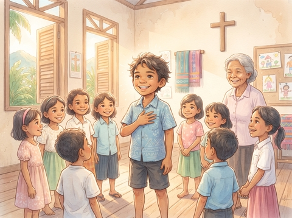 |
| Semana 14 Lisaun 14 |
Respeitu no Ha'hi Inan-Aman 📖 Efésiu 6:1-3 Teresa iha foho Ermera ajuda nia inan hamos kofe-fuan no lori ai-maran ho oin-midar no respeitu boot. |
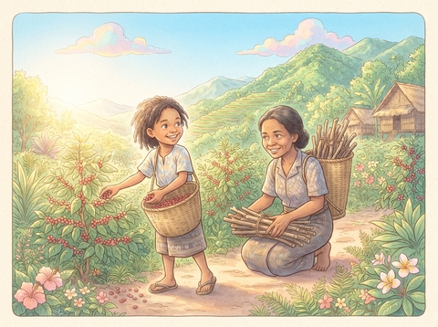 |
| Semana 15 Lisaun 15 |
Domin no Dame iha Maun-Alin no Biin-Alin Sira Leet 📖 Jenesis 2:18 · Roma 12:10 Gabriel iha Liquiçá halakon hirus no fahe ai-fuan jaca ba nia alin-feto Rita ho domin maun-alin nian. |
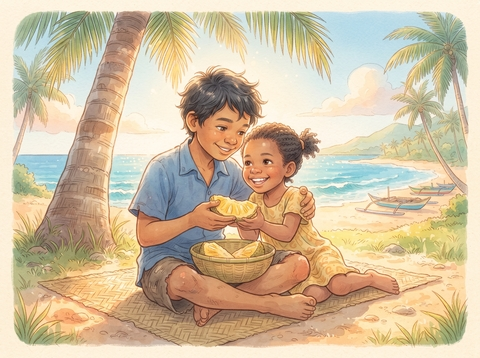 |
| Semana 16 Lisaun 16 |
Liafuan Di'ak no Kmanek ho Domin 📖 Efésiu 4:29 · Provérbiu 15:1 Josefina iha Maliana kaer nia avó-feto nia liman ho domin no ko'alia liafuan kmaan ne'ebé fo bensaun ba uma laran. |
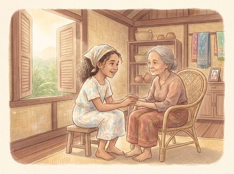 |
|
Bento iha Dili konfesa fiar ho brani iha Súnday School |
🎯 Tópiku Prinsipál Ohin
Ita foti lian brani katak 'Jesus ne'e Kristu, Maromak Moris Nia Oan', no foti desizaun atu la'o nu'udar Nia disípulu lialos.
📖 Versíkulu Bíblia Ohin — Mateus 16:16
"Simão Pedro responde dehan: 'Ita ne'e Kristu, Maromak moris nia Oan-Mane.'" |
Jesus husu ba Nia disípulu sira: 'Ema mundu ne'e hanoin ha'u ne'e sé?' Maibé depoiz ne'e Nia husu diretu ba sira: 'Maibé imi hanoin ha'u ne'e sé?' Pedro foti lian brani no konfesa husi laran moos katak: 'Ita ne'e Kristu, Maromak moris nia Oan-Mane!' Jesus hahi'i Pedro nia fiar no haraik bensaun boot ba nia.
Iha suku Dili besik tasi-ibun, labarik-mane ida ho tinan sanulu-resin-ida naran Bento tuur iha Igreja no rona mestre nia hanorin. Bento hanoin fali kona-ba nia moris: dalaruma nia tuir belun sira halimar iha li'ur no moe atu hatudu katak nia tuir Jesus. Maibé rona tiha Pedro nia lian, Bento sente kbiit foun iha nia laran.
Bento hamriik iha orasaun laran no dehan ba Na'i: 'Jesus, ha'u la moe tan! Ha'u konfesa ho ha'u-nia ibun no laran katak Ita ne'e ha'u-nia Na'i no Maromak. Ha'u foti desizaun atu tuir Ita nu'udar disípulu lialos!' Husi loron ne'e, Bento la'o ho oin-midar no brani atu konvida nia belun sira mai rona Evanjellu.
Misaun Prátika Semana Ne'e: Ha'u foti desizaun atu tuir Jesus! Semana ne'e, foti kadernu ida ka dehan ba mestre/família katak: 'Ha'u foti desizaun atu tuir Jesus loron-loron!' no brani foti lian harohan iha Igreja no uma laran.
|
Teresa iha Ermera ajuda nia inan hamos kofe-fuan ho oin-midar |
🎯 Tópiku Prinsipál Ohin
Ita rona no respeitu inan-aman nia liafuan ho laran agradesimentu, tanba Maromak tau sira atu kuida ita.
📖 Versíkulu Bíblia Ohin — Efésiu 6:1-3
"Oan sira, rona imi-nia inan-aman iha Na'i laran, tanba ne'e di'ak no lialos. 'Respeitu ó-nia aman no inan'—ne'e mak mandamentu primeiru ne'ebé iha promesa—'atu ó hetan di'ak no moris naruk iha rai.'" |
Maromak fo inan-aman mai ita nu'udar prezente kmanek boot liu. Maromak haruka ita atu 'respeitu no ha'hi inan-aman'. Ne'e dehan katak ita rona sira-nia liafuan ho laran moos, la responde ho lian hakanek ka oin-aat, no ajuda sira ho ksolok. Bainhira ita respeitu inan-aman, Maromak promesa katak ita sei hetan di'ak no moris naruk iha rai.
Iha foho matak Ermera, labarik-feto ida ho tinan sia naran Teresa haruka husi nia inan atu ajuda ku'u kofe-fuan no lori ai-maran mai uma molok loron-matan tun. Dalaruma Teresa sente baruk no hakarak halimar de'it. Maibé Teresa hanoin fali versíkulu Efésiu 6:1-3 ne'ebé mestre hanorin iha Súnday School.
Teresa halai lalais bá ajuda nia inan ho oin-midar no ksolok. Bainhira inan haree Teresa halo servisu ho laran ksolok no respeitu, inan hakuak Teresa metin no harohan bensaun ba nia. Teresa aprende katak rona inan-aman lori ksolok boot ba Maromak no ba família!
Misaun Prátika Semana Ne'e: Ha'u respeitu no ha'hi ha'u-nia inan-aman! Semana ne'e, rona lalais inan-aman nia liafuan sin lamenta, no dehan ba sira: 'Inan, Aman, ha'u ama no respeitu imi barak!' hamutuk ho halo servisu uma nian 1 ho ksolok.
|
Gabriel iha Liquiçá fahe ai-fuan jaca ba nia alin-feto Rita ho domin |
🎯 Tópiku Prinsipál Ohin
Iha uma laran, ita tulun no hadomi malu nu'udar maun-alin no biin-alin ho laran-luak no respeitu.
📖 Versíkulu Bíblia Ohin — Jenesis 2:18 · Roma 12:10
"Na'i Maromak dehan: 'La di'ak ba ema atu hela mesak; Ha'u sei halo ajudante ida ne'ebé adekuadu ba nia.' (Jenesis 2:18) / Hadomi malu ho domin maun-alin nian; foti malu ho respeitu boot liu fali ó-nia an rasik. (Roma 12:10)" |
Maromak la fo maun-alin no biin-alin mai ita atu istóriadu ka istória-aat malu, maibé atu sai ajudante no belun metin iha uma laran. Iha família laran, hadomi maun-alin dehan katak ita fahe ai-han no sasán sira, husik violénsia ka lia-hakanek, no fo apoiu ba malu iha tempu susar.
Iha suku Liquiçá besik tasi, labarik-mane ida ho tinan sanulu naran Gabriel no nia alin-feto ki'ik Rita halimar kosta no han ai-fuan jaca. Rita foti jaca fuan boot no monu halo Gabriel hakanek laran no hakarak hirus no subar ai-fuan hotu. Maibé Gabriel hanoin fali Liafuan Roma 12:10: 'Hadomi malu ho domin maun-alin nian.'
Gabriel dada iis naruk, oin-midar no fahe ai-fuan jaca ne'e ba nia alin ho laran-luak. Rita haksolok no fo hakuak ba nia maun. Sira halimar no tuur hamutuk ho dame no ksolok. Inan-aman haree sira ho ksolok boot no fahe bensaun ba uma laran.
Misaun Prátika Semana Ne'e: Ha'u kria dame no domin ho ha'u-nia maun-alin sira! Semana ne'e, fahe hahán ka halimar hamutuk ho ó-nia maun-alin/biin-alin sin istória, no ajuda sira halo servisu uma nian ka dever eskola nian ho laran-di'ak.
|
Josefina iha Maliana kaer nia avó-feto nia liman ho liafuan morin |
🎯 Tópiku Prinsipál Ohin
Ita ko'alia liafuan morin no kmanek ne'ebé foti kbiit no fo ksolok ba família no belun sira iha uma no li'ur.
📖 Versíkulu Bíblia Ohin — Efésiu 4:29 · Provérbiu 15:1
"Keta husik liafuan aat sai husi imi-nia ibun, maibé ko'alia de'it liafuan di'ak ne'ebé foti kbiit no fo grasa ba sira ne'ebé rona. (Efésiu 4:29) / Resposta kmaan halakon hirus, maibé liafuan muki hamosu hirus boot. (Provérbiu 15:1)" |
Ita-nia liafuan iha kbiit boot. Liafuan aat ka lia-hakanek hanesan tudik ne'ebé hamosu kanek iha laran, maibé liafuan morin, kmaan, no kmanek fo kbiit no fo kura ba ema nia klamar. Nu'udar Jesus nia disípulu, ita presiza simu Espíritu Santu nia kbiit atu ko'alia liafuan di'ak ne'ebé foti kbiit ba família no belun sira.
Iha suku Maliana (Bobonaro), labarik-feto ida ho tinan sia naran Josefina gosta ko'alia lian manas bainhira nia sente kole ka hirus ba servisu uma nian. Loron ida, Josefina ko'alia lian maka'as ba nia avó-feto. Avó la hirus maibé hatudu oin triste no dehan neineik: 'Josefina, liafuan aat fo kanek ba laran. Maromak fo ibun ba ita atu hahi'i no fo bensaun.'
Josefina sente arrepende iha laran. Nia kaer nia avó nia liman no dehan: 'Avó, deskulpa ha'u. Ha'u hahi'i avó no ama avó barak.' Husi loron ne'e, Josefina uza liafuan kmaan: 'Obrigadu', 'Favór', 'Deskulpa', no 'Ita kapás tebes!' Iha uma laran, liafuan morin Josefina nian hamosu ksolok no paz kmanek ba ema hotu.
Misaun Prátika Semana Ne'e: Ha'u ko'alia de'it liafuan di'ak no kmanek! Semana ne'e, husik liafuan hirus/aat hotu, no ko'alia liafuan bensaun nian ba família no amigu sira (ezemplu: 'Obrigadu barak', 'Ha'u ama ó', 'Ita halo di'ak tebes!').